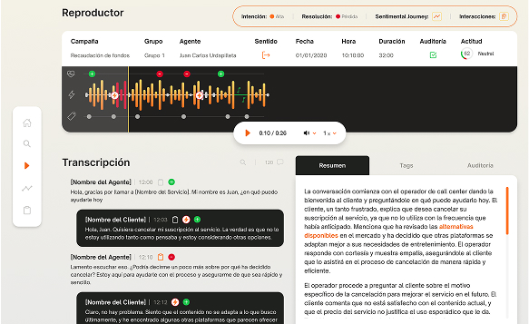
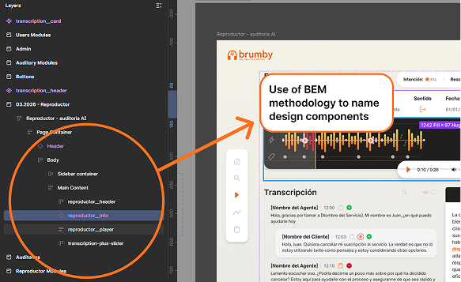
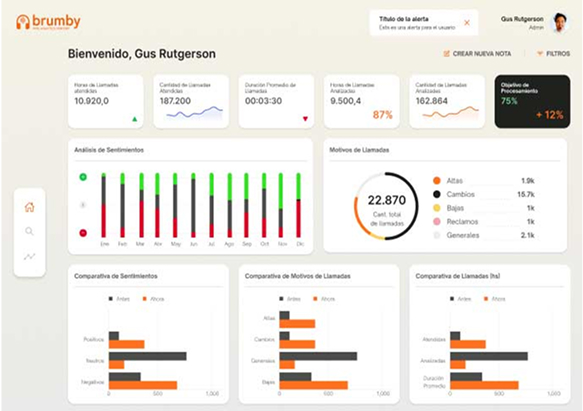
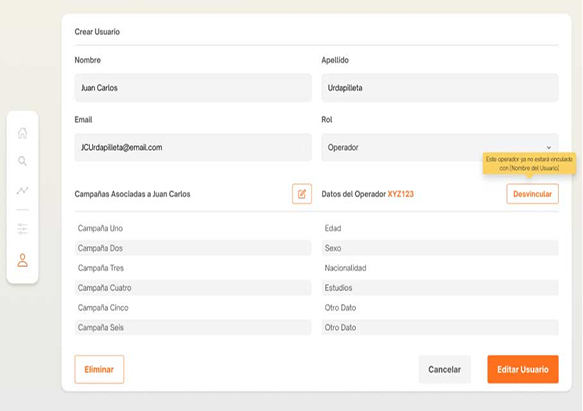
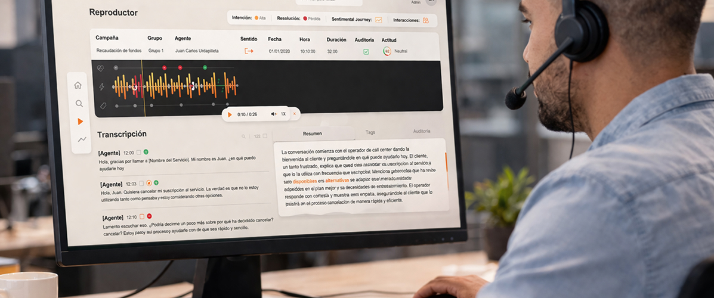

My Role
I worked as the UX/UI Designer and Front-end Designer for the project.
My responsibilities included the entire design lifecycle, from initial research to front-end implementation.
Responsibilities included:
- UX research and workflow discovery with stakeholders
- Information architecture and product structure
- Wireframing and interface design
- Interaction design
- UI design and visual system
- Prototyping
- Front-end layout implementation
- Design handoff and collaboration with developers
Worked closely with: 1 Product Manager and 3 Developers.
While development was handled by the engineering team, I delivered the HTML/CSS structure using Tailwind, which developers integrated into the React codebase.
Brief & Context
Brumby is a web application that leverages artificial intelligence to analyze call center conversations and help supervisors improve service quality and agent performance.
The platform processes recorded calls and extracts valuable insights such as emotional tone, silence detection, interaction dynamics, and conversation transcripts. Supervisors and QA auditors can review calls, analyze performance metrics, and evaluate agents using structured scoring forms.
The goal of the platform is to reduce the time required to audit calls while improving customer experience and service quality.
Problem
Call center supervisors and QA auditors typically need to review large numbers of calls to assess agent performance and identify problematic interactions.
This process is often:
- manual
- time-consuming
- inconsistent
- difficult to scale
Supervisors must listen to entire calls to identify issues such as poor communication, long silences, or negative customer sentiment.
Brumby addresses this challenge by using AI to automatically analyze calls and highlight key moments, emotional signals, and conversation dynamics.
This allows auditors to focus on insightful evaluation instead of manual review.
Design Process

Audio Player Page

Use of BEM methodology in Figma layers naming.
Discovery & Research
Stakeholder interviews and workflow analysis helped identify how supervisors and auditors currently evaluate calls.
UX Structure
Information architecture and user flows were created to organize the product's main features
Wireframing & Prototyping
Low-fidelity wireframes helped define layout structure and data hierarchy.
UI Design & Implementation
High-fidelity designs were created in Figma to define the product's visual identity and interactions.
Front-end Implementation
The UI was implemented using HTML, CSS, and Tailwind before being integrated into the React development environment.

Dashboard page

Create User Form
Solutions & Results
Results
The platform transformed how call center supervisors and QA auditors review customer interactions. By
combining AI-driven conversation analysis with a clear and intuitive interface, Brumby makes it possible to
quickly identify patterns in calls, evaluate agent performance, and detect issues that would otherwise require
hours of manual listening.
Supervisors can now access transcripts, emotional indicators, silence detection, and evaluation tools within a
single interface, significantly streamlining the auditing workflow. This enables teams to focus less on manual
review and more on improving service quality, coaching agents, and making data-informed decisions.
Key Features
-
Call Analytics Dashboard
The main dashboard allows supervisors to quickly review calls and identify key patterns across interactions. Users can explore:
- emotional signals
- conversation dynamics
- silence detection
- interaction markers
-
AI Call Player
The custom audio player enables detailed analysis of conversations. Users can:
- listen to calls
- follow synchronized transcripts
- identify emotional tone shifts
- detect silence moments
- review key interaction events
-
Agent Evaluation System:
Supervisors and auditors can evaluate agents using structured forms directly linked to each call. This allows organizations to:
- standardize evaluations
- track performance trends
- improve training programs
-
Call Management and Search:
Users can easily browse and locate calls through a structured interface designed for efficient auditing workflows.
Impact
Although the product is still early in its lifecycle, it was designed to support several measurable outcomes:
- reduce the time required to audit calls
- improve operational efficiency
- increase service quality insights
- enhance customer satisfaction through better agent performance
Users
The primary users of the platform are:
Call Center Supervisors
Responsible for monitoring service quality and agent performance.
QA Auditors
Professionals responsible for reviewing calls, evaluating operators, and ensuring quality standards are met.
These users need tools that allow them to quickly identify problematic calls and evaluate agents efficiently.
Key Metrics
